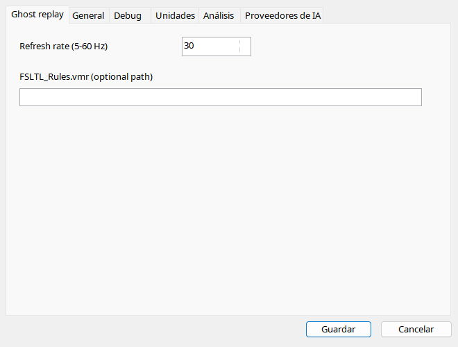

Cargue un vuelo en MSFS 2024 y seleccione grabación. Ghost usa conexión/hilo propios, separado del análisis. Deténgalo antes de cambiar archivo/sesión. AIG/FSLTL requieren modelos instalados; VMR no los instala. Un modelo sustituto puede ofrecer menos animaciones.
Avión AI visual, distinto del usuario; no ejecuta la aviónica del complemento original.
| Opción / acción | Funcionamiento y limitaciones |
|---|---|
| Reproducir / pausa / detener | Necesita vuelo cargado y SimConnect. Detener elimina el objeto; hágalo antes de cambiar vuelo/sesión. |
| Atrás / adelante | Saltos de 10 segundos para ghost, distintos de los 30 segundos normales. |
| Frecuencia | 5–60 Hz, predeterminado 30; más actualizaciones no aumentan muestras originales ni garantizan rendimiento. |
| Modelos | Mejor coincidencia instalada AIG/FSLTL por tipo/librea; alternativa AI predeterminada. El modelo debe estar realmente en Community. |
| VMR | FSLTL_Rules.vmr opcional; vacío usa detección automática. Las reglas no instalan modelos. |
| Animación | Posición, actitud, tren/flaps/spoilers, mandos, motores, luces y reversas dependen de datos e inputs escribibles del modelo. |
